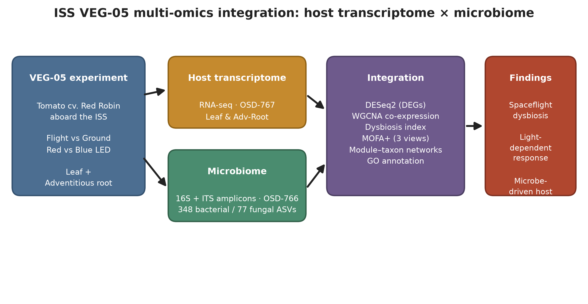
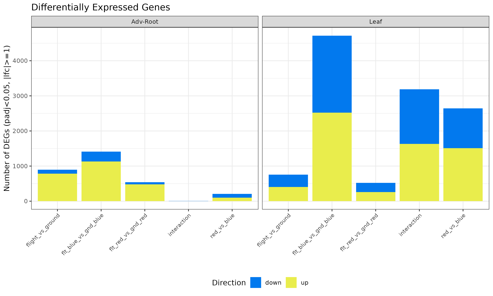
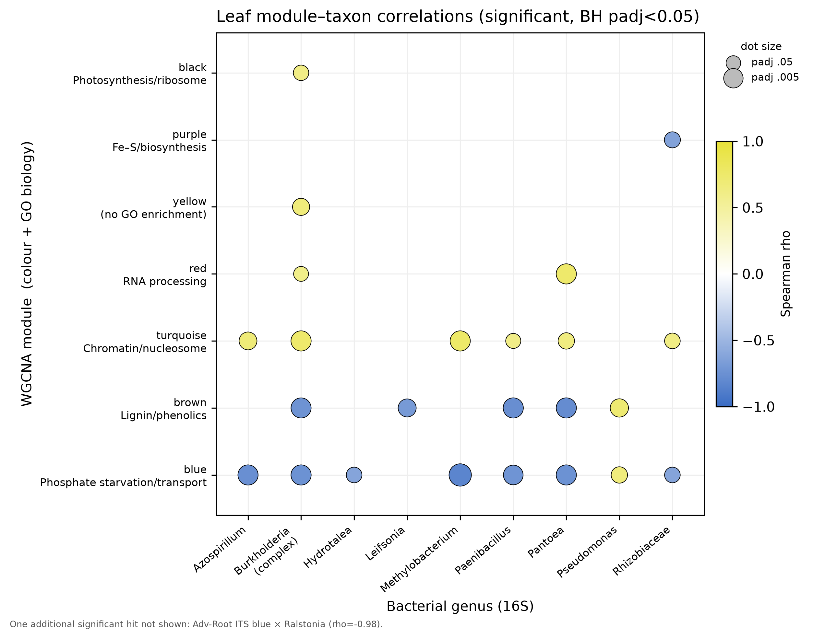

Spaceflight imposes unique stressors on plant-microbe interactions, but the coordinated responses of host transcriptomes and associated microbiomes remain poorly characterized. We analyzed tomato (Solanum lycopersicum cv. Red Robin) grown aboard the ISS as part of VEG-05, integrating 16S rRNA and ITS amplicon sequencing (OSD-766) with host transcriptomics (OSD-767) across two tissues (leaf, adventitious root) and two light treatments (red vs. blue). DADA2 yielded 348 bacterial and 77 fungal ASVs. Spaceflight significantly reshaped leaf bacterial communities (PERMANOVA R²=0.42, p=0.001) and increased bacterial alpha diversity. The transcriptional response was strongly light-dependent: 4,716 DEGs under blue light versus only 523 under red in leaves. WGCNA identified a 169-gene adventitious-root module correlated with fungal dysbiosis (r=−0.85, padj=0.001) but not flight status — a microbe-driven host signature independent of the direct spaceflight stimulus. MOFA+ across three omics layers confirmed a dominant flight-associated factor (48% transcriptome variance) and showed the leaf bacterial community was more flight-responsive than the fungal one. FAPROTAX prediction enriched nitrogen fixation, methanotrophy and methanol oxidation. Spaceflight restructures plant-associated microbiomes in a tissue- and light-specific manner — with implications for crop production in long-duration missions.
Spaceflight reshapes the tomato microbiome in a light-dependent manner
A multi-omics integration of the ISS VEG-05 experiment: host transcriptome (OSD-767) and phyllosphere/rhizosphere microbiome (OSD-766) in tomato, across two tissues and red vs. blue light — combined through DESeq2, WGCNA, MOFA+ and module–taxon networks.
Headline: spaceflight restructures leaf bacterial communities (PERMANOVA R² = 0.42) and drives a strongly light-dependent host response (4,716 leaf DEGs under blue light vs 523 under red); a microbe-driven root module tracks fungal dysbiosis independently of flight status.
Abstract
Highlights
Microbiome reshaped
Leaf bacterial communities restructured by spaceflight (PERMANOVA R²=0.42) with increased bacterial alpha diversity.
Light-dependent host response
4,716 leaf DEGs under blue light vs 523 under red — the flight transcriptome is gated by light quality.
Microbe-driven module
A 169-gene root module tracks fungal dysbiosis (r=−0.85) but not flight — host response driven by the microbiome, not the stimulus.
Cross-omics integration
MOFA+ finds a dominant flight factor (48% transcriptome variance); FAPROTAX enriches N-fixation & methanotrophy.
Selected figures



Data & code
- Manuscript: with figures
· npj-styled LaTeX in
manuscript/latex/ - Analysis code:
integration/,rnaseq/,microbiome/(DADA2, DESeq2, WGCNA, MOFA+, FAPROTAX) - Results:
results/andsupplementary_tables/ - Figures:
figures/(Fig 1–7)
Sequencing data from NASA OSDR: OSD-766 (microbiome) and OSD-767 (host RNA-seq). Cite the individual OSD accessions; OSDR data remain subject to the NASA Open Data policy.